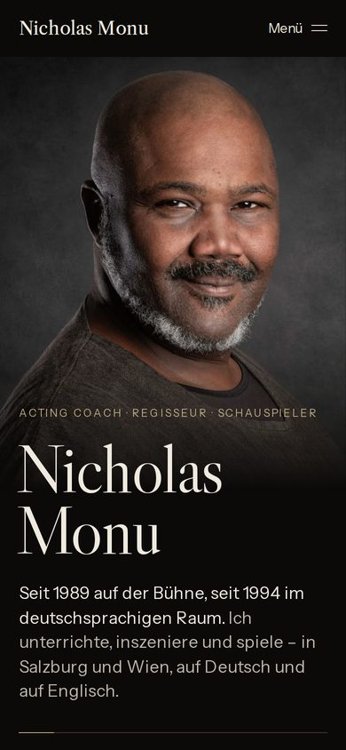
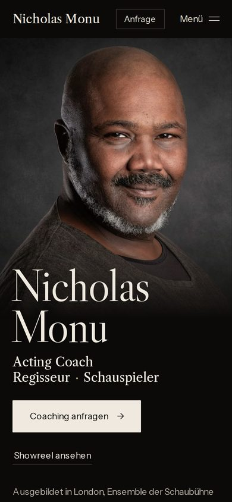

Real project
nickmonu.com
Website of actor, director and acting coach Nicholas Monu, Salzburg and Vienna. 14 pages, German and English, live since September 2026.
Corresponds to the package Premium, from €4,800
The website of Nicholas Monu as a copy, German and English. Click through all 14 pages; only the form sends nothing here.
Starting point
Nicholas Monu works as an actor, director and acting coach. His website has three jobs: show who he is, show what he offers, and make enquiries possible. Two languages, because his clients are a mix of Salzburg and Vienna.
Decision
A dark ground with brass as the only accent colour, a serif for the presence, a grotesque for everything that is read and clicked. The reasoning: the site should look like a stage and still stay fast and calm.
Build
The colours come from the material of the site and have been checked for contrast:
- Ground #0B0A09 16.4 : 1 against #EFE9DF
Page ground, light text on it - Brass #BBA883 8.5 : 1 against #0B0A09
Accent for lines and emphasis
| Typefaces | Libre Caslon Display and Libre Caslon Text, Instrument Sans. All self-hosted. |
|---|---|
| Languages | German and English, every page in both versions. |
| Structure | 14 pages, generated statically, no site builder. |
| Privacy | No cookies, no tracking. |
Rebuild: version 25 → 26
After launch, several people gave the same feedback: the look is convincing, but the important information is not where you would look for it, especially on mobile. So I rebuilt the home page.


Result
- Main content visible, desktop
- 0.56 s
- Layout shift (CLS)
- ≈ 0
- Blocking time (TBT)
- 0 ms
Measured with Google PageSpeed Insights, September 2026. The site is live and can be measured by anyone at any time.
Limits
It is my first project, and it belongs to my family. So what you see here is not client work under market conditions, but what I can achieve without a client's pressure, and how I deal with feedback. I do not yet have a testimonial from an outside client, and I will not invent one.